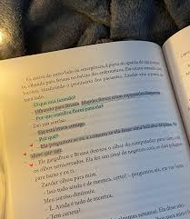

Cada livro é uma porta para novos mundos, onde ideias e histórias se entrelaçam. A leitura não é apenas um refúgio, mas uma fonte de inspiração que transforma meu olhar sobre a vida e alimenta minha criatividade.
